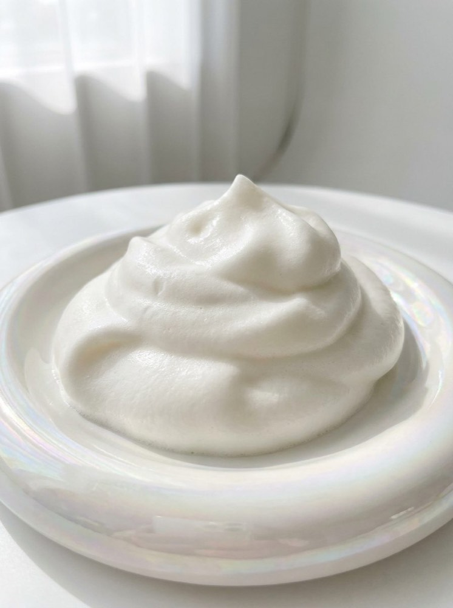
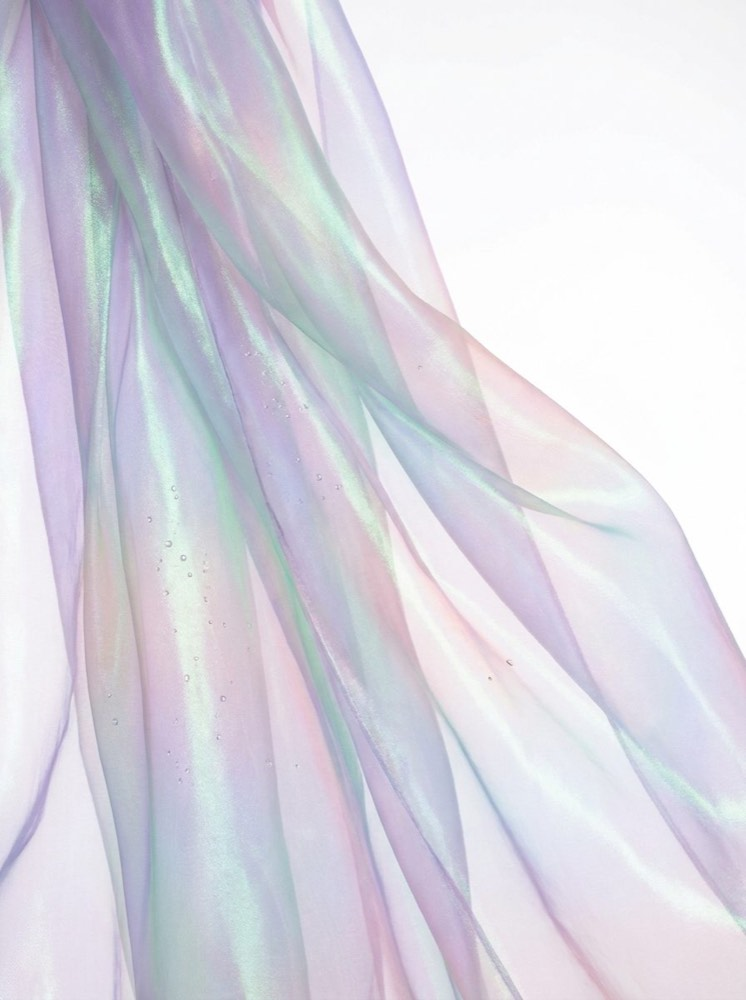
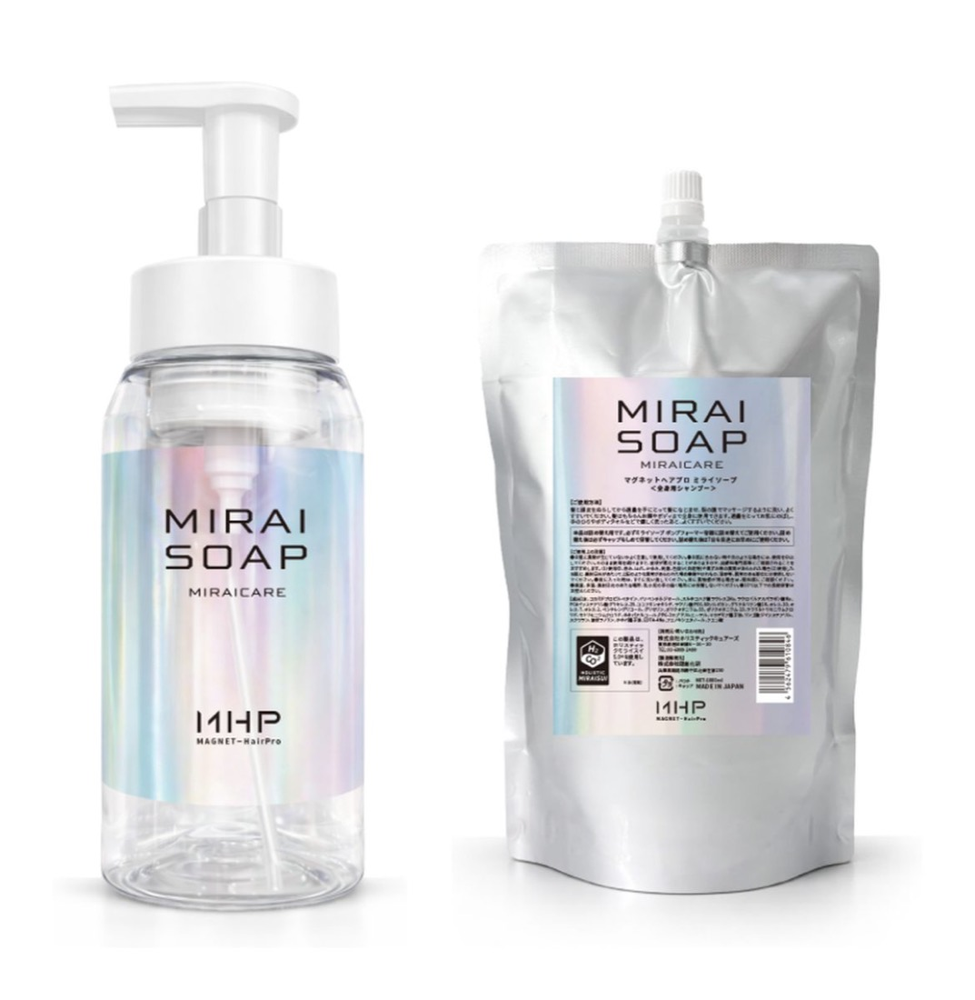

泡の前に
水のはなし
シャンプーを選ぶとき 私たちはずっと成分表ばかり見てきました
けれど毎日いちばん長く髪にふれているのは 実は「水」のほうです
SEAMのヘッドスパでつかわれている機能水が 1本のソープになりました
その名前は MIRAI SOAP — ミライソープ

洗浄成分ではなく 水を進化させる
ミライソープは MAGNET Hair Pro / MIRAICARE が手がける全身ソープ
発想が逆さまです 洗浄成分を足して強くするのではなく
土台の水そのものを見つめ直すところから始まっています
使われているのは 高次元機能水〈ホリスティック ミライスイ 5.0〉
名前は未来的ですが 出発点はとても土着的です
神話の地の一滴から
始まりは 神話の地・高千穂に湧くミネラル豊富な天然テラヘルツ水〈高千穂照水〉
この天然水をナノバブルで圧壊加工し 水分子をきめ細かくクラスター化
そのすきまに水素と炭酸を練り込み 気体の特性を保ったまま閉じ込めます
熱に弱い水素と炭酸を守るため 製法は非加熱
「水素の還元力 炭酸の乳化力」— つくり手がそう呼ぶ気体の個性が この1本の芯です
美容師の手を守るために生まれた
おもしろいのは 開発の動機です
一日に何度もシャンプーをする 美容師の手を守るために—
水と気体のサポートで洗浄力・保水力を保ちながら 界面活性剤は約60%カット
泡はホイップのように濃厚で 摩擦のダメージも 使う量も抑えてくれます
目安は通常の約半分 プロの現場から生まれた設計は 毎日つかう人にこそ効いてきます

SEAMは「オフ」からつかう
SEAMのヘッドスパは 水素と炭酸をつかう独自メニュー
その体験を家に持ち帰る鍵として ミライソープを
新しいヘアケアの前の「オフ — 水素クレンジング」として提案しています
スタイリング剤や皮脂 積み重なった残留感をやさしくオフして
まっさらな髪と地肌で 次の一本を迎える
- ・ ① オフ — ミライソープの泡で 髪と地肌をリセット
- ・ ② ケア — 新しいシャンプー・トリートメントを迎える
- ・ ③ 満ちる — うるおいのヴェールに包まれて仕上がる
髪だけでなく 顔もからだもフェムケアまで これ1本で全身に
洗い上がりは「まるで上質な温泉あがりのよう」— と つくり手は表現します


Mirai Soap
まずは 泡にふれてみてください
セット（ボトル＋詰め替えパウチ）税込 ¥8,800 詰め替えのみ 税込 ¥7,700 SEAM各店の店頭でお求めいただけます
8.4からは メンバー限定オンラインショップ でも お求めいただけるようになる予定です メンバー限定オンラインショップ でも お求めいただけます
ブランドパンフレットを見る→水素と炭酸のヘッドスパを体験するなら 個室ヘッドスパ へ
Instagram @seam_japan のフィードでも紹介しています
よくある質問
- どこで買えますか
- SEAM各店の店頭でお求めいただけます ボトルと詰め替えパウチのセットが税込 ¥8,800 詰め替えのみは税込 ¥7,700 です
8.4からは メンバー限定オンラインショップでも扱いが始まる予定ですメンバー限定オンラインショップでも扱いがあります（会員登録は店頭で） - 髪以外にも使えますか
- 全身用シャンプー（化粧品）として 髪・顔・からだ・フェムケアまで 1本で使えます 使用感には個人差があります
- どう取り入れるのが おすすめですか
- 新しいヘアケアの前の「オフ（水素クレンジング）」として取り入れるのがSEAMの提案です 濃厚な泡で 使う量は通常の約半分が目安です
本品は化粧品です 効果・効能は化粧品の範囲であり 使用感には個人差があります
「オフ（水素クレンジング）」はSEAMによる使用ステップの提案です